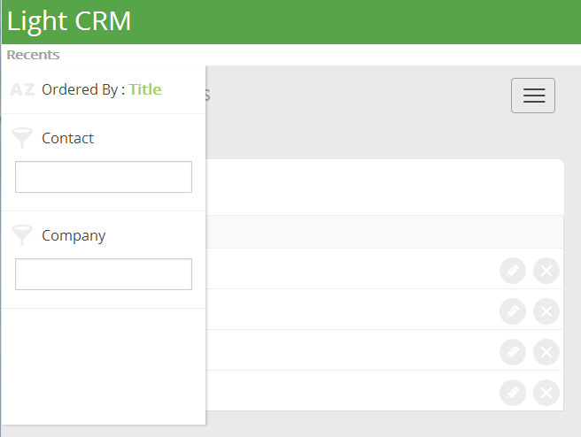

For GeneXus 15, see Action Group Control for the Web.
In a RWD, wide screens have plenty of space to display a menu, and that's why it is shown on the left or right side of the web page. However, in small screens (like phone screens) the contents of the web page and the menu may not be appropriate to be displayed together.
So, in the case of extra small screens (<768px), by using a button or an image the user can make the menu appear smoothly on one side of the screen, overlapping with what is shown in the page. After selecting a menu option, the menu disappears, and the page shows the information according to the user's selection.
The button to make the menu appear is the same button used to make it disappear from the screen.
In the GeneXus Evolution 3 Web Laboratory, the menu is shown on the left side of the screen; in the case of wide screens:
When the web page is displayed in cell phone screens, there is a button in the top right corner of the screen for the user to call the menu.
When the user clicks on the button, the menu appears on the left, overlapping with the contents of the page:
The Work With for Web Pattern generates this solution for the case of work with objects that have many filter options.
The same happens with default prompts that have filters and ordering conditions.
Light CRM WW Meetings in Wide Screens

Light CRM WW Meetings in phone screens
The following example is an automatically generated prompt for the Countries transaction. The Abstract layout of the prompt is shown in the picture below.
Note that:
1.The left side Responsive Table is called "AdvancedContainer" and contains the different filters for the selection list.
The AdvancedContainer table is going to be shown by default only for small screen devices and bigger (>=768px), not for extra small screen devices (like phones).
In the case of phones, the user will have the "Toggle" button to press and make the AdvancedContainer table appear.
Abstract Layout prompt: properties of the Toggle button
So, the toggle button is visible only for extra small screens.
The following pictures show how the Responsive Sizes property (X Evolution 3) is configured to achieve the desired behavior.
Abstract Layout prompt: Responsive table for phone screens
Abstract Layout prompt: Responsive table for small and bigger screens
2. The following code is associated with "Toggle" on click event:
Event 'Toggle'
if AdvancedContainer.Class = ThemeClass:AdvancedContainer
AdvancedContainer.Class = ThemeClass:AdvancedContainer + !" " + ThemeClass:AdvancedContainerVisible
BtnToggle.Class += !" " + ThemeClass:BtnToggleActive
else
AdvancedContainer.Class = ThemeClass:AdvancedContainer
BtnToggle.Class = ThemeClass:BtnToggle
endif
Endevent
When the Toggle button class is AdvancedContainer, the AdvancedContainerVisible Theme class is added to the list of classes of the AdvancedContainer table.
On the contrary, when the class is AdvancedContainerVisible, the AdvancedContainer class is associated with it.
The effect is that the table appears and disappears when the button is clicked.
The AdvancedContainerVisible and AdvancedContainer classes are predefined classes, descendants of the Table class, and can be edited in the Flat Theme, which is used for Responsive Web Applications.
Basically, the AdvancedContainerVisible and AdvancedContainer class properties are as follows:
.AdvancedContainerVisible{
box-shadow: 2px 1px 2px 0px rgba(0,0,0,0.15);
left: -15px;}
.AdvancedContainer,.AdvancedContainerVisible{
background-color: #fff;
-moz-transition: left 0.5s ease-in-out 0s;
-webkit-transition: left 0.5s ease-in-out 0s;
-ms-transition: left 0.5s ease-in-out 0s;
transition: left 0.5s ease-in-out 0s;}
.AdvancedContainer{
bottom: 0px;
left: -265px;
position: absolute;
top: -15px;
width: 230px;}
Additionally, the AdvancedContainer responsive table has the Cell Class property set to "PromptAdvancedBarCell", which is a class with the following settings:
.PromptAdvancedBarCell
{
bottom: 0px;
margin-top: 10px;
position: absolute;
top: 0px;
z-index: 1;}
Note:
- For a customized example, it may be necessary to adjust the settings of the left property, and the z-Index CSS property of the AdvancedContainerVisible class.
- The CSS transition is defined as a Custom property.
The LightCRM is a sample KB where you can find the WW pattern applied to all the web transactions, and the prompts that have filters and ordering conditions are examples where the menu displays differently depending on the screen size.
Look and feel of responsive web applications
|